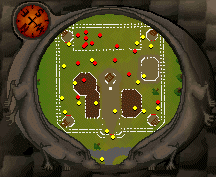
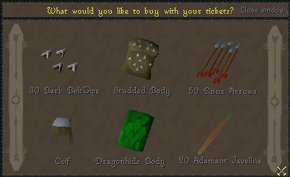
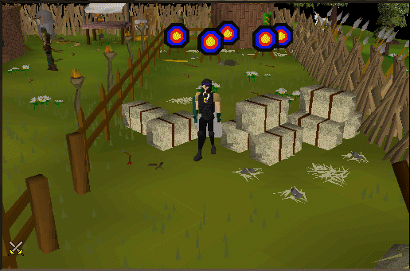

Rangers Guild
Requirements: 40 RangedLocation: North of Ardougne, nearby Hemenster
Here's a map pic below.

Once you walk into the guild, you'll notice it's not too big. There are four shops in the guild: An Armour shop, a Bow and Arrow shop, a ticket merchant shop, and a throwing weapons shop. Straight ahead just before the competition area is a ladder which leads to a tower for ranging practice. To the North East is a Leatherworker, who will tan your cow and dragon hides for a fee. Straight ahead once you walk through the door near the hay stack is the competition area, I'll explain more on that later. For now we'll begin with the shops.
Aaron's Archery Appendages

| Item | Price (gp) |
|---|---|
| Leather Body | 27 |
| Hardleather Body | 221 |
| Studded Body | 1105 |
| Leather Chaps | 26 |
| Studded Chaps | 1950 |
| Leather Cowl | 31 |
| Coif | 260 |
| Leather Vambraces | 23 |
Dargaud's Bow and Arrows

| Item | Price (gp) |
|---|---|
| Arrow shafts | 2 |
| Bronze Arrow tips | 1 |
| Iron Arrow tips | 2 |
| Steel Arrow tips | 11 |
| Mithril Arrow tips | 33 |
| Adamant Arrow tips | 78 |
| Rune Arrow tips | 390 |
| Bronze Arrow | 2 |
| Iron Arrow | 6 |
| Steel Arrow | 28 |
| Mithril Arrow | 75 |
| Adamant Arrow | 187 |
| Rune Arrow | 936 |
| Bronze brutal arrow | 5 |
| Iron brutal arrow | 10 |
| Steel brutal arrow | 20 |
| Black brutal arrow | 35 |
| Mithril brutal arrow | 50 |
| Adamant brutal arrow | 95 |
| Rune brutal arrow | 450 |
| Short bow | 65 |
| Oak Short bow | 130 |
| Willow Short bow | 260 |
| Long bow | 104 |
| Oak Long bow | 208 |
| Ogre composite bow | 180 |
| Willow Long bow | 422 |
Ticket Merchant

| Item | # of tickets |
|---|---|
| 30 Barb Bolt Tips | 140 |
| Studded Body | 150 |
| 50 Rune Arrows | 2000 |
| Coif | 100 |
| Dragonhide Body | 2400 |
| 20 Adamant Javelins | 2000 |
Authentic Throwing Weapons
| Weapon | Price (gp) |
|---|---|
| Bronze Javelin | 5 |
| Iron Javelin | 7 |
| Steel Javelin | 31 |
| Mithril Javelin | 83 |
| Adamant Javelin | 208 |
| Rune Javelin | 520 |
| Bronze Thrownaxe | 3 |
| Iron Thrownaxe | 9 |
| Steel Thrownaxe | 33 |
| Mithril Thrownaxe | 91 |
| Adamant Thrownaxe | 228 |
| Rune Thrownaxe | 572 |
Leather Worker
He will tan your cow and dragon hides for a small fee.
Competition Area
Talk to the Competition Judge and you can shoot at the targets to earn tickets. The better you score while playing this mini game, the more tickets you can earn. You will need a bow and the Judge will provide you with 10 bronze arrows. It costs 200gp to play, and you can only use the arrows he gives you..any other arrows you try to use will not work, so equip them and click a target to fire at it. Here below are the points earned when your arrow hits the appropriate color on the target. Also below is a picture of what the target you are shooting at looks like.
| Area | Points | Ranging Exp. |
|---|---|---|
| Black | 10 | 5 |
| Blue | 20 | 10 |
| Red | 30 | 15 |
| Yellow | 50 | 25 |
| Bulls-eye | 100 | 50 |
Practice Tower
In the middle of the Ranger's Guild you will find a ladder. Climb up and you'll have guards up there yelling that the tower is under attack on all ends: north, east, south, and west. You may go to any platform and range the guards; the Ranging Advisor will advise you which is most suitable for your ranging skill level. The guards will fire back at you and hit you with arrows so be prepared with your range armour!
This Guild guide was written by xxteargodxx. Thanks to jakie chan2, Thunderdog, stormer, Firkløver, and gondomwinges for corrections.
This Guild guide was entered into the database on Sat, Mar 13, 2004, at 04:06:00 PM by Monkeychris and was last updated on Sat, Jun 25, 2005, at 03:08:19 PM by Lewt04.